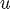
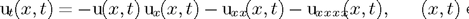
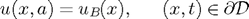
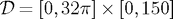
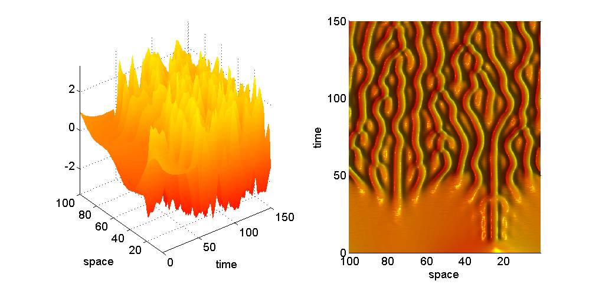
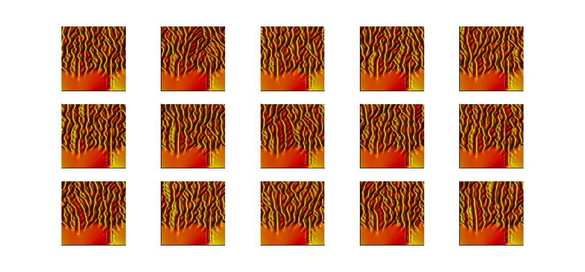

Demonstration of PODES solution of the Kuramoto-Sivashinsky PDE
This is a brief tutorial on how to use the software from the paper “Probabilistic Integration for Uncertainty Quantification in Differential Equation Models” by O.A. Chkrebtii, D.A. Campbell, M.A. Girolami, B. Calderhead
Contents
The Kuramoto-Sivashinsky (KS) PDE is a model of reaction-diffusion systems (Kuramoto and Tsuzuki,1976; Sivashinsky and Michelson, 1980), originally used to describe phenomena, such as laminar flame fronts, driven far from equilibrium by instabilities. This model is also of mathematical interest because it exhibits temporal chaotic dynamics. Just as with the Lorenz system, we point out that numerical solutions do not provide a sensible approximation of this system's long-range behaviour.
The KS system is a one-dimensional, nonlinear PDE boundary value problem describing the time evolution of the intensity of a flame front, , by,


Following (Kassam and Trefethen, 2005), we consider the spatio-temporal domain .
Set up grid, hyperparameters, and initial state:
% set random seed (or comment out to generate one automatically) RandStream.setGlobalStream(RandStream('mt19937ar','seed',100)) kernel = 'gaussian'; a = 0; % lower boundary of time domain b = 150; % upper boundary of time domain tspan = [a b]; M = 128; % size of spatial discretization grid N = 2000; % number of solver time-steps dt = range(tspan)/(N-1); % size of one time-step B = 15; % number of realizations produced alpha = 10; % prior precision parameter lambda = 2*dt; % length-scale % FFT with integrating factor v = exp(-ik^3t)*u-hat. % See Kassam and Trefethen (2005) details el = 16; x = 32*pi*(1:M)/M; t = linspace(tspan(1),tspan(2),N); D1 = 1i*(1/el)*[0:M/2-1 0 -M/2+1:-1]; D2 = D1.^2; D2((M/2)+1) = -(M*pi/(32*pi))^2; D4 = D2.^2; L = -D2-D4; g = -D1/2; u = repmat(vertcat(cos(x/el).*(1+sin(x/el)),zeros(N-1,M)),[1,1,B]); uhat = repmat(vertcat(fft(cos(x/el).*(1+sin(x/el))),zeros(N-1,M)),[1,1,B]); Duhat = repmat(vertcat(g.*fft((cos(x/el).*(1+sin(x/el))).^2),zeros(N-1,M)),[1,1,B]);
Probabilistically solve resulting ODE initial value problem:
E = exp(repmat(L,N-1,1).*repmat(dt*(1:N-1)',1,M)); Binv = zeros(N,N); if strcmp(kernel,'uniform') Ntrim = ceil(2*lambda*N/range(tspan))+1; else Ntrim = N; end tic disp('This will take ~5 minutes ... ') for k = 1:N-1 tn = k*dt; if k == 1 Binv(1,1) = alpha/RR1d(t(1),t(1),lambda,a,b); else % components of the inverse of block matrix (Lambda + RR1d)^{-1} if k < Ntrim + 1 b = RR1d(t(1:k-1),t(k),lambda,a,b)/alpha; D = Binv(1:k-1,1:k-1); Db = D*b; btD = Db'; c = ss_kp1 + RR1d(t(k),t(k),lambda,a,b)/alpha - b'*Db; else bt = RR1d(t(Ntrim),t(1:Ntrim-1),lambda,a,b)/alpha; D = Binv(k-Ntrim+1:k-1,1:k-1); btD = bt*D; Db = btD'; c = ss_kp1 + RR1d(t(k),t(k),lambda,a,b)/alpha - btD(1,k-Ntrim+1:k-1)*bt'; end % build up the inverse of block matrix (Lambda + RR1d)^{-1} Binv(1:k-1,1:k-1) = Binv(1:k-1,1:k-1) + Db*btD/c; Binv(1:k-1,k) = -Db/c; Binv(k,1:k-1) = -btD/c; Binv(k,k) = 1/c; end qrb = QR1d(t(k+1),t(1:k),lambda,a,b)*Binv(1:k,1:k)/alpha; ss_kp1 = RR1d(t(k+1),t(k+1),lambda,a,b)/alpha - RR1d(t(k+1),t(1:k),lambda,a,b)*Binv(1:k,1:k)*RR1d(t(1:k),t(k+1),lambda,a,b)/(alpha^2); sapv = QQ1d(t(k+1),t(k+1),lambda,a,b)/alpha - qrb*RQ1d(t(1:k),t(k+1),lambda,a,b)/alpha; for bb = 1:B sapm = uhat(1,:,bb).*E(k,:) + qrb*(Duhat(1:k,:,bb).*E(fliplr(1:k),:)); uhat(k+1,:,bb) = mvnrnd(sapm',sapv)'; u(k+1,:,bb) = real(ifft(uhat(k+1,:,bb))); Duhat(k+1,:,bb) = g.*fft(u(k+1,:,bb).^2); end if isnan(sum(Duhat(k+1,:))) display(['error at iteration ',num2str(k)]) return end end toc
This will take ~5 minutes ... Elapsed time is 338.715787 seconds.
Plot one PODES realization
bb = 1; figure() subplot(1,2,1) surf(t,x,u(:,:,bb)'), shading interp, lighting phong, axis tight material([0.30 0.60 0.60 40.00 1.00]); ylabel('space') xlabel('time') subplot(1,2,2) surf(t,x,u(:,:,bb)'), shading interp, lighting phong, axis tight view([-90 90]), colormap(autumn); set(gca,'zlim',[-5 50]) light('color',[1 1 0],'position',[-1,2,2]) material([0.30 0.60 0.60 40.00 1.00]); ylabel('space') xlabel('time')
Plot B PODES realizations
figure() for bb = 1:B subaxis(3,5,bb) surf(t,x,u(:,:,bb)'), shading interp, lighting phong, axis tight view([-90 90]), colormap(hot); set(gca,'zlim',[-5 50]) light('color',[1 1 0],'position',[-1,2,2]) material([0.30 0.60 0.60 40.00 1.00]); axis square; set(gca,'xtick',[]) set(gca,'ytick',[]) end